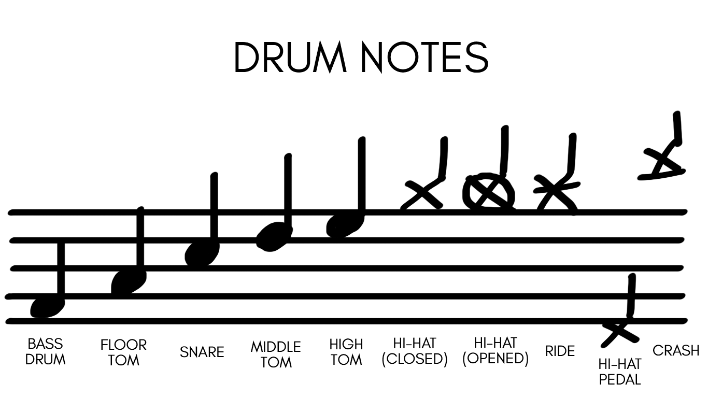

HOW TO READ DRUM NOTES
It’s not necessary to know how to read sheet music – it’s always possible to learn through watching, listening and recreating. However, this tool might be useful and practical when it comes to drumming. It’s worth mentioning that notes for drums are not complicated and you can get familiar with basic ones just in a few seconds. After obtaining such knowledge you can practise with transcripts, which can make your journey with drums more understandable and lead you through drum parts of every existing song. Here you can see the examples of most commonly used elements of a drum kit:
